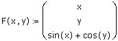
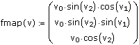

3D Parametric Surface Plots and Space Curves |
CreateMesh(function, [s0, s1, t0, t1], [sgrid, tgrid], [fmap]) Returns a nested array of three matrices representing the x, y, and z-coordinates of a parametric surface defined by the function of two variables in the first argument.
CreateSpace(function, [t0, t1], [tgrid], [fmap]) Returns a nested array of three vectors representing the x, y, and z-coordinates of a parametric space curve defined by the function of one variable in the first argument.
function The first argument is one of the following:
F(x, y) a real, parametric, vector-valued function specifying the x, y, and z values, for example

G(x, y) a real, scalar-valued function of x and y that specifies only the z-values, for example
G(x, y) := sin(x) + cos(y)
This type of function cannot be used with CreateSpace.
f1(x, y), f2(x, y), f3(x, y) three real, parametric, scalar-valued functions, separated by commas in the argument list, for example
| f1(x, y) := x | f2(x, y) := y | f3(x, y) := sin(x) + cos(y) |
Each function must be defined as a function of two variables, even if only one variable is used.
For CreateSpace, the functions supplied must be functions of a single parameter instead of two parameters.
